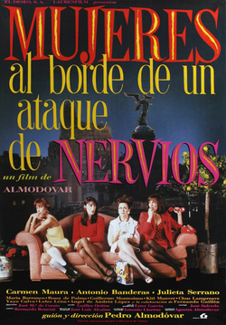

Pedro Almodóvar
1998
95 minutes
TITLE: Women on the Verge of a Nervous Breakdown TEXT PLACEHOLDER 246
This film seems to you like Pedro Almodóvar on the verge of making a halfway normal film. No one you know seems to believe you when you try to tell them that early Almodóvar films are nearly as demented as John Waters films and for some of the same reasons. Part of this you attribute to a blindness caused by the presence of Penelope Cruz or (especially) Antonio Banderas in his films. Antonio Banderas is absurdly attractive to the point of nearly eclipsing anything weird in the film.
Many of Almodóvar's films remind you of going over to your gay and queer friends' houses when you were a kid and playing wrong with their Barbie dolls, a phenomenon that is doubtless covered elsewhere somewhere in these pages. Except in Almodóvar's case, his Ken doll is literally the actor Antonio Banderas, whose career he is largely responsible for launching. And who is actually a pretty good actor! For many straight male film critics, Antonio Banderas seems to be dismissed as a pretty boy, a piece of eye candy for straight female audiences to drool over. And for many straight female film viewers this seems to be the case as well. But for you the best way to watch Antonio Banderas in one of Almodóvar's films is to imagine him as a Ken doll who is not shut off from the gay male gaze. He's pretty for the boys too, and he's fine with that.
This movie is what happens when you play wrong with your Barbies with a budget. And the Barbies are all bitchy and day drinking and drugging themselves and each other and one has a freaky Habsburg jaw and a bad attitude and the decision-making is absurd and terrible and they're all fucking each others' husbands and getting into absurd catfights and getting into chases on motorcycles borrowed from gender-appropriate G.I. Joes that were gifted to a male child trying to butch him up a bit so he'd survive gradeschool.
One of the only times you're sad you're not a parent is missing out on the opportunity to play with Barbies with your daughter (or son as the case may be) and being gamely receptive to such "wrong" play, telling them stories of how you used to do the same going to your gay friends' house and playing with his sister's toys, sometimes with his sister's permission and participation. If the kid acts normal and wants to play boring-Barbie, then that's fine. But if they want to get demented and create some absurd soap opera with Barbies throwing lye in each others' faces to scar them and having them die of overdoses and eating disorders and have trials for them where they are accused of "assholism" and shot before a firing squad of G.I. Joes, so much the better. Maybe you'd help inspire the next Todd Haynes or Chantal Ackerman.
Time to choose something different: